scan2cad：3DGS 掃描 → 自動 CAD 重繪 開發全記錄
1專案緣起
整個專案始於一個問題：
這在學界叫 scan-to-CAD / scan-to-BIM。核心觀念先講清楚：3DGS 的高斯球是為了「照片級擬真」，不是拿來量尺寸的；真正能量測的是它底下的點雲＋公制尺度。而這兩樣，專案一開始就已經有了。
2可行性分析：已完成約 7 成
盤點後發現，「分析物件與尺寸」這一段其實大半已經做好了——既有的 x5-roomtour 工具鏈裡已經有這些：
| 能力 | 既有工具 | 產出 |
|---|---|---|
| 3DGS → 公制尺度 | measure_space.py（T8 燈管 1.22m 標定）＋align_3dgs_to_lidar.py | 公尺尺度 k |
| 空間／物件分析 | build_arch_plan.py | arch_elements.json（已存在） |
| 碰撞殼 | build_collision_mesh.py | alpha/Poisson mesh |
缺的是把 arch_elements.json（2D 公制平面）→ 3D 參數化 → 吐出建模軟體檔案的「橋」，加上高度維度與驗證回環。這就是 scan2cad 補上的部分。
3資料查找歷程（關鍵技術決定）
動手前的調查與踩坑，決定了後面能不能做對。以下是實際的查找與判斷：
① 定位素材 + 解碼壓縮 splat
工坊的 3DGS 存成 壓縮 splat PLY（lt4_defog.compressed.ply，PlayCanvas element chunk 量化格式），簡易 PLY 解析器讀不了。用 @playcanvas/splat-transform 解碼成 raw 點雲：
splat-transform lt4_defog.compressed.ply lt4_raw.ply
# → 1,063,383 gaussians · raw x/y/z/opacity/f_dc/rot/scale② 尺度與地板／天花板：不猜，實際量
這一步最關鍵，也最容易出錯（尺度差 10 倍是這類系統最怕的）。查證結果：
- 單位：
arch_elements.json裡的房間/家具/燈全都已經是公尺（build_arch_plan 存檔時已 ×k），不能再乘一次。 - 尺度：沿用管長標定
k=0.859m/單位（水平方向可靠）。LiDAR 對齊只有人流方位校正、沒存下公制 Sim3。 - 座標：splat 框是 y-down（地板在 y 較大側）。地板用「XZ 覆蓋最廣的水平帶」找到（y≈+0.535 單位）。
- 淨高：天花板點稀疏、覆蓋法失效，改取頂端 2% 分位＋對照 build_arch_plan 的燈帶假設（floor−2.3 單位），取較大者 = 1.98m。誠實標註：這是「相機掃到的高度」，可能未含真天花板（±10%）。
③ VLM 分析真實環景
把工坊環景照分段放大，用視覺辨識物件型別、以工作檯高 0.85m 為尺度錨測量。這一步補上了頂視點雲結構上抓不到的牆面/天花板物件。
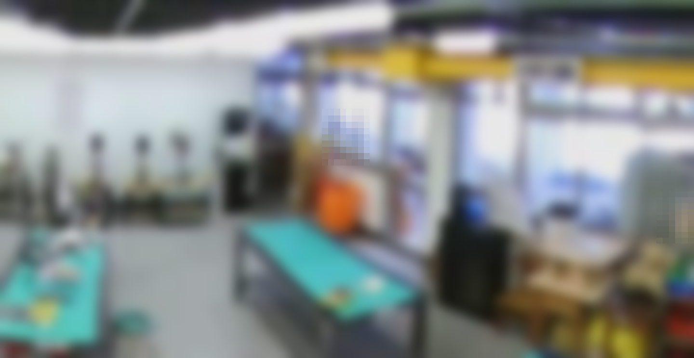
4建置：四階段管線
照這個要求，管線設計成三段層層增加物件、最後生成 CAD：
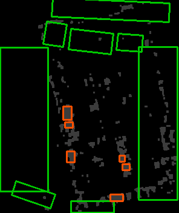
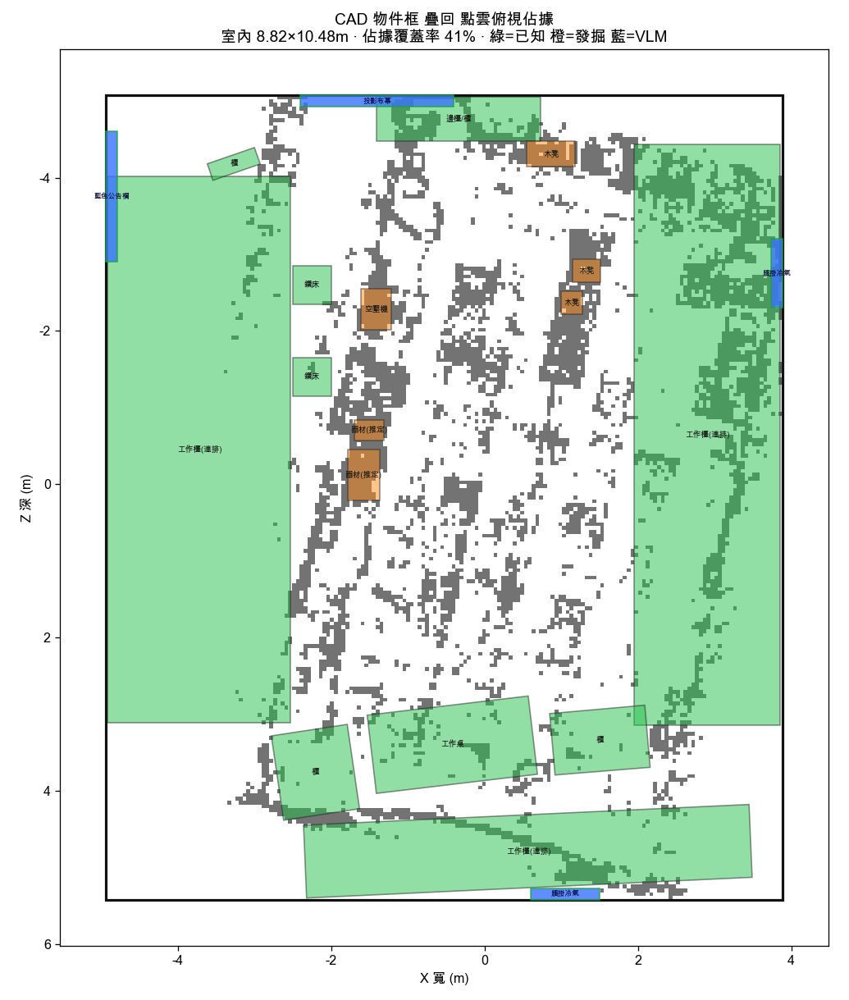
③ VLM 再補上 +5 件牆面/天花板物件（頂視幾何拿不到的），並替發掘方塊命名。④ 生成 CAD。物件數從 arch 的 8 件 → 21 件。
5精修到細緻（R1–R6）
自主精修六項，每項都自我驗證：
- R1 細緻家具庫：實心方塊 → 工作檯（檯面＋桌腳＋層板）、櫃（抽屜＋把手）、木凳（座面＋腳）、空壓機（氣瓶＋馬達）等參數化模組。
- R2 建築細節：門扇＋門框、窗框＋窗櫺＋玻璃＋窗台、踢腳板、黑板木框。
- R3 三引擎＋STEP：補齊 MCL39 三軟體——OpenSCAD（CSG）／Blender（Mesh）／CadQuery（B-Rep→STEP 可製造）。
- R4 L1/L3 驗證＋自動修正：接上 MCL39 驗證金字塔，抓到穿插/出界後自動修正。
- R5：360° 轉盤、真實 vs 重繪對照。
- R6：記錄頁精修、全流程重跑（11 秒可重現）。
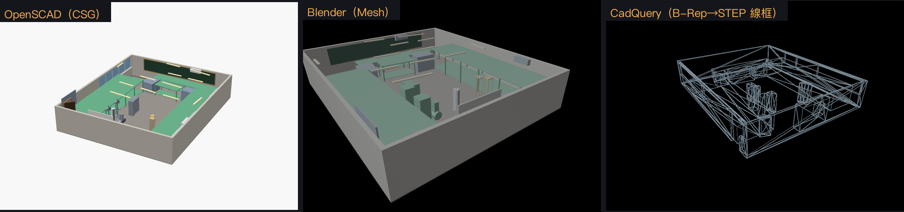
scene.json 自動生成。左 OpenSCAD（CSG 細緻家具）、中 Blender（網格）、右 CadQuery（B-Rep 線框，匯出 STEP）。對應 MCL39 的三軟體交叉驗證。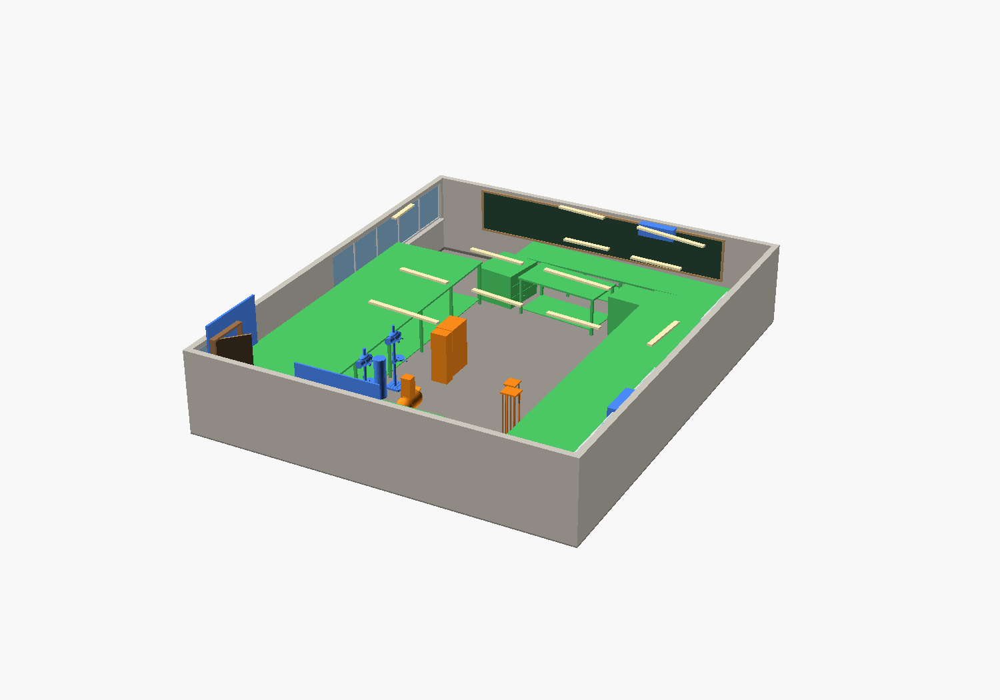
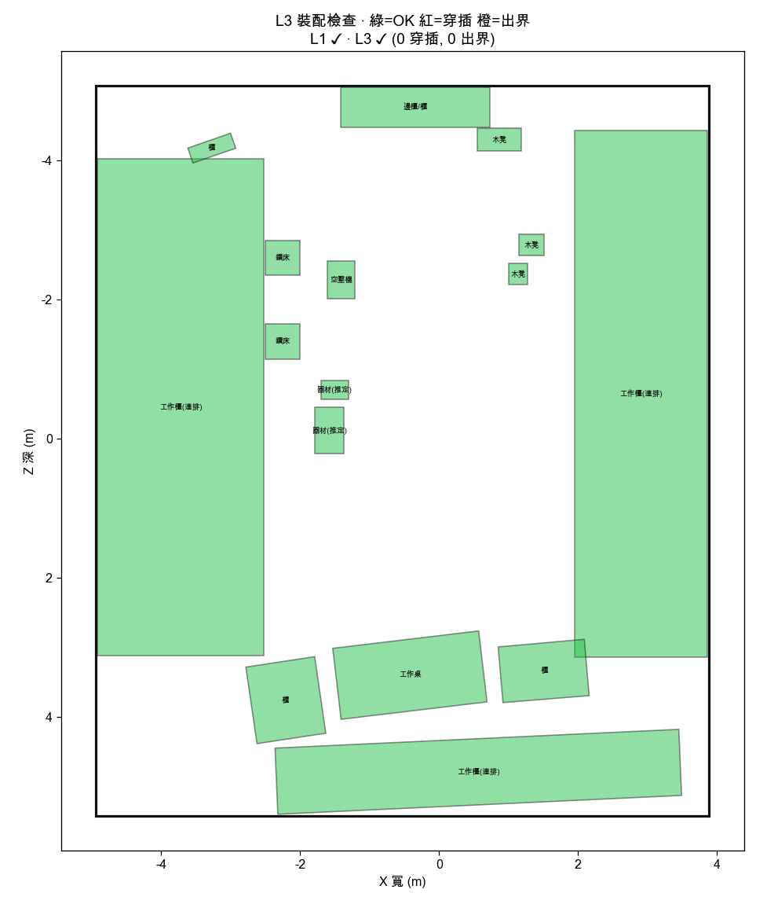
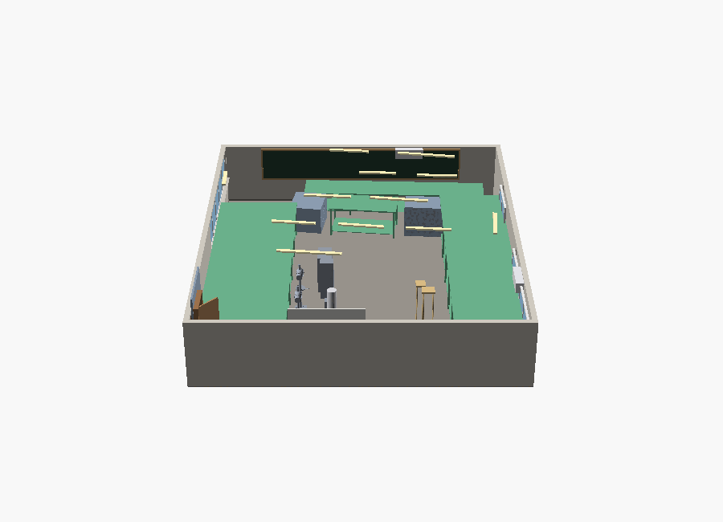
6檢索升級：粗方塊 → 精密參數化件
點雲分群只給得出「有尺寸的方塊」。要更精細，正解是檢索——用一個精密參數化零件取代方塊，擺到偵測到的位置。示範把偵測到的鑽床換成一支完整的立式鑽床件。
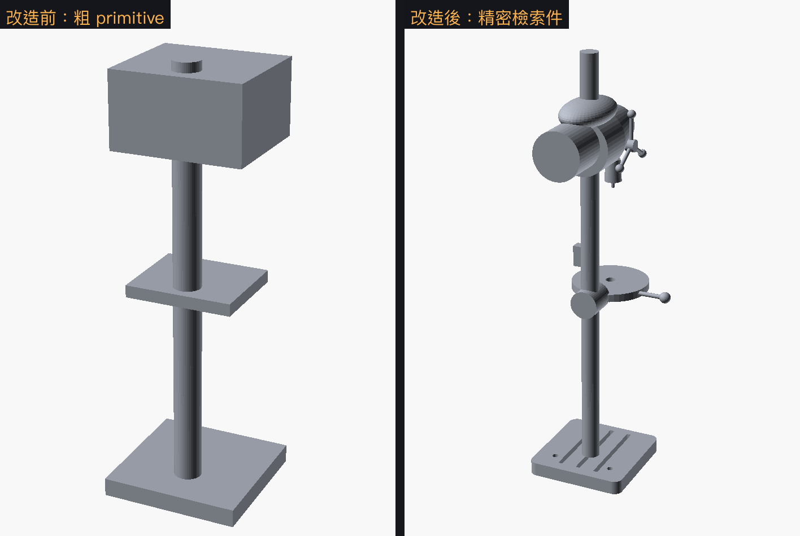
isValid()=True、體積 0.022 m³，匯出 drillpress.step——直接送製造/模擬。這正是「把設計端（MCL39）建好驗過的精密件，擺進真實掃描空間（x5-roomtour）」的作法。7對話逐字稿
本專案的完整對話往來（使用者訊息原文＋每一輪的處理）：
→ 回覆：可行，且已完成約 7 成；盤點既有工具、講明能與不能、提出四階段管線，並提議先做方塊模型跑通閉環再挑件升級。
→ 處理：解碼點雲 → 分析已知+量高度 → 幾何發掘 +6 件 → VLM 分析 +5 件 → OpenSCAD/Blender 生成 → 疊回點雲驗證。物件 8→21 件。做了首版記錄頁。
→ 處理：R1 細緻家具庫、R2 建築細節、R3 三引擎+STEP、R4 L1/L3 驗證+自動修正、R5 轉盤+對照、R6 記錄頁+全流程重跑。每項自我驗證，11 秒可重現。
→ 處理：② 進 KINGSTON 隨身碟備份（gzip 驗證通過）；③ 檢索升級——精密立式鑽床件（OpenSCAD 細緻 + CadQuery B-Rep→STEP），before/after 對照，機台改金屬灰放回場景。
→ 處理：本頁即完整記錄；含人像的真實照已去識別化；程式碼推 GitHub、公開站掛 GitHub Pages（連結見下）。
8圖片集
{kind=link}
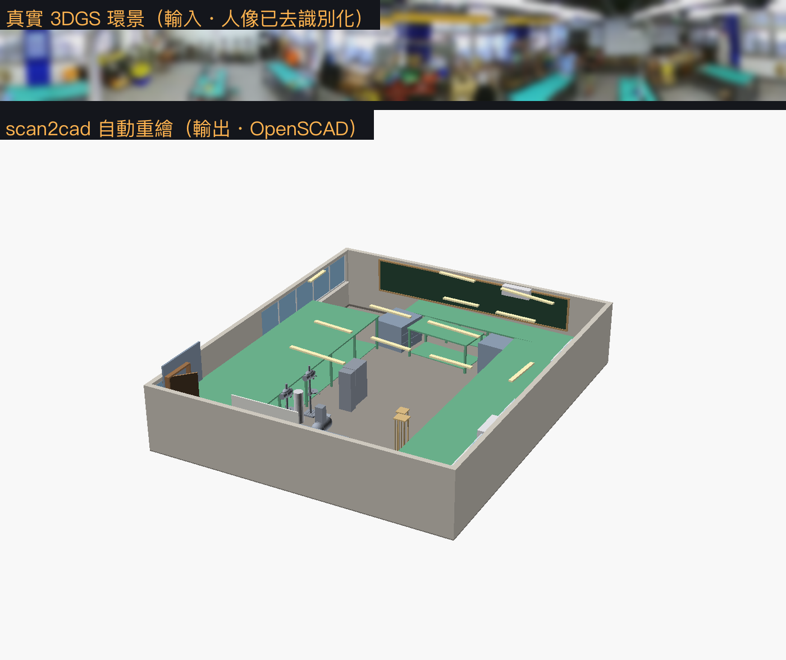
{kind=link}
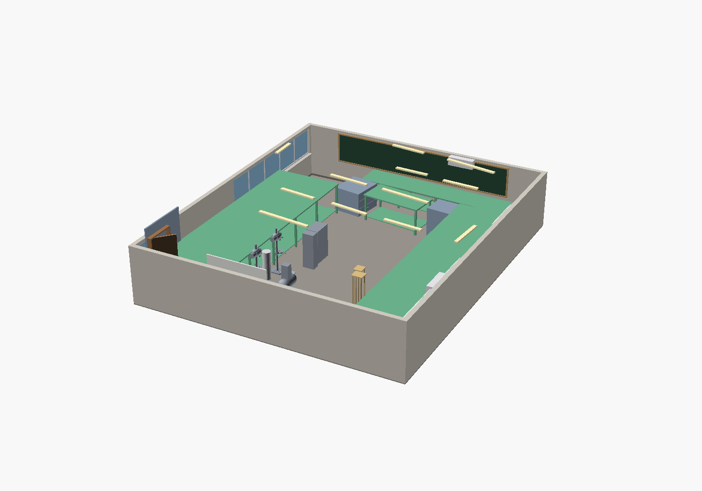
{kind=link}
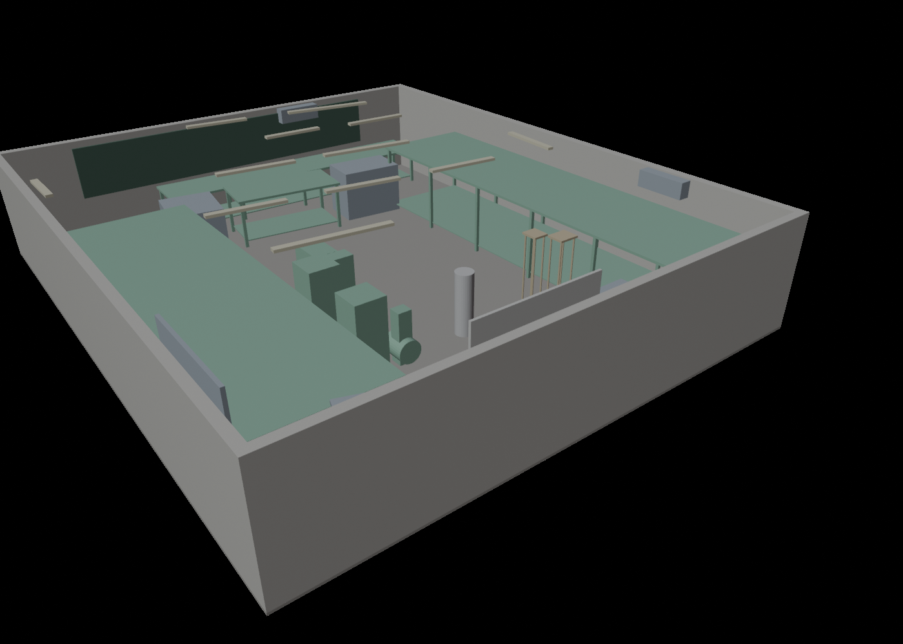
{kind=link}
{kind=link}
{kind=link}
{kind=link}
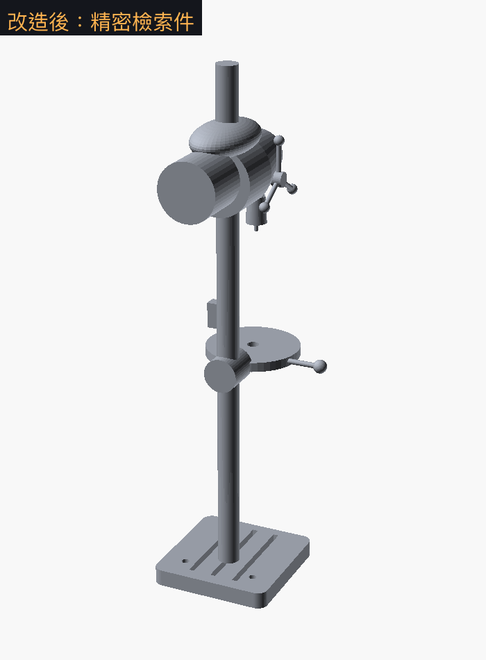
{kind=link}
{kind=link}
{kind=link}
{kind=link}
{kind=link}
9成果與檔案
L1·L3 通過三引擎一致11 秒可重現
完整管線 bash run_pipeline.sh 一鍵到底：解碼 → 分析 → 發掘 → VLM → 三引擎生成 → L1/L3 驗證+自動修正 → 檢索精修 → 記錄頁。
| 檔案 | 說明 |
|---|---|
| room.scad | OpenSCAD 參數化房間（可開啟改參） |
| furniture_lib.scad | 細緻家具模組庫 |
| build_blender.py | Blender bpy 腳本 |
| room.step | 整間房 B-Rep（可製造，18 實體全 isValid） |
| drillpress.step | 精密鑽床檢索件 B-Rep（isValid，0.022 m³） |
| scan2cad.html | 技術總覽頁（含物件清單與驗證數據） |
本頁為開發全記錄（緣起／可行性／資料查找／建置／精修／檢索／逐字稿）。原始碼：github.com/henrychao521/scan2cad